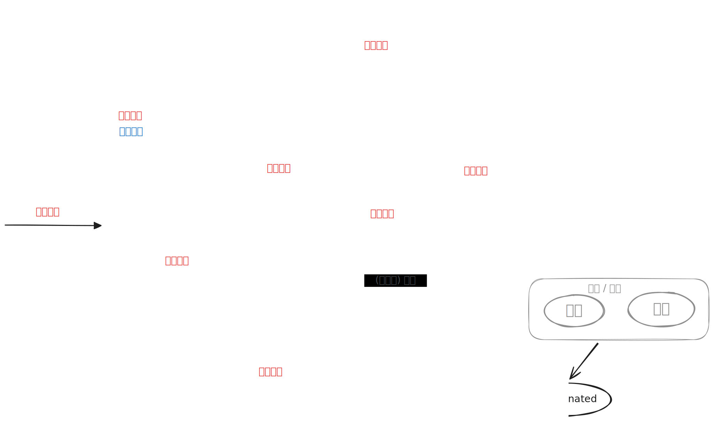

操作系统 Lesson 7 [lesson-7][edit]
操作系统 Lesson 7 [lesson-7][edit]
$\gdef\spaces#1{~ #1 ~}$ $\gdef\str#1{\footnotesize{#1}}$ $\gdef\hint#1{{\color{gray}{\str{#1}}}}$ $\gdef\type#1{~:~\texttt{#1}}$
处理机调度层次
| 调度层次 | 状态转换 | 位置 | 别名 |
|---|---|---|---|
| 高级 | 新建 $\to$ 就绪 | 外存 $\to$ 内存 | 作业调度 |
| 中级 | 就绪 $\to$ 静态就绪 阻塞 $\to$ 静态阻塞 | 内存 $\to$ 外存 [swap] | 中程调度 |
| 低级 | 就绪 $\to$ 运行 | 内存 | 进程调度 |

七态模型及调度
1. 高级调度 (作业调度)
- 作业调度是内存与辅存之间的调度. 频率最低.
- 按一定原则从外存的作业后备队列中挑选一个作业调入内存, 并创建进程, 每个作业只调入一次, 调出一次. 作业调入时会建立 PCB, 调出时才撤销 PCB.
- 作业调度每次要接纳多少个作业进入内存取决于多道程序的并发程度, 即允许有多少个作业同时在内存中运行.
2. 中级调度 (中程调度 / 内存调度)
- 按照某种策略决定将哪个处于挂起状态的进程重新调入内存.
- 内存不够时, 可将某些进程的数据调出外存. 等内存空闲或者进程需要运行时再重新调入内存.
- 暂时调到外存等待的进程状态为挂起状态 (挂起态, suspend). 被挂起的进程 PCB 会被组织成挂起队列.
3. 低级调度 (进程调度 / 处理机调度)
- 按照某种策略从就绪队列中选取一个进程, 将处理机分配给它.
- 进程调度是操作系统中最基本的一种调度, 操作系统中都必须配置进程调度.
高级调度
- 其他名称: 作业调度、宏观调度、长程调度.
- 时间尺度: 分钟、小时、天.
- 工作过程:
- 按照一定的策略从后备作业中选择作业.
- 将选中的作业调入主存.
- 给选中的作业分配内存、
I/O等必要资源. - 创建进程, 插入就绪队列.
- 作业完成后, 做好善后工作
作业
是用户在一次解题或一个事务处理过程中要求计算机系统所做工作的集合.
- 作业步. 每一个作业的步骤.
- 作业控制块 [JCB] 是作业的 唯一标志. 保存进行作业管理和调度信息
- 作业的状态.
- 后备状态
- 运行状态
- 完成状态
调度策略准则
用户准则
- 作业周转时间短
- 响应时间快 (分时系统)
- 保证截止时间 (实时系统)
- 优先权
作业周转时间 $T =$ 后备队列等待调度时间 + 在就绪队列等待时间 + CPU上执行时间 + 等待 I/O 操作完成时间.
$$ \begin{aligned} \hint{平均周转时间} ~ T &\spaces= \frac1n\sum_{n=1}^nT_i, \\ \hint{平均带权周转时间} ~ W &\spaces= \frac1n \sum_{n=1}^n \frac{T_i}{T_{S_i} ~ \hint{作业运行的时间}} \end{aligned} $$
周转时间 $=$ 作业完成时间 $−$ 作业提交时间 (到达时间).
调度策略准则
- 系统准则: 吞吐量大, 处理机利用率高, 各类资源平衡利用.
进程调度算法 — 先来先服务
先来先服务 [FCFS, First Come First Served]
- 用于作业调度和进程调度.
- 选择一个或多个最先进入队列的作业 (进程).
优缺点:
- 利于长作业，不利于短作业.
- 利 CPU 繁忙型作业 (进程), 不利于
I/O繁忙型作业 (进程). - 适于批处理系统, 不适于分时系统.
$\textbf{Example.}$ 先来先服务
| 进程名 | 到达 | 服务 | 开始 | 完成 | 周转 | 带权周转 |
|---|---|---|---|---|---|---|
| A | $0$ | $4$ | $0$ | $4$ | $4$ | $1$ |
| B | $1$ | $3$ | $4$ | $7$ | $6$ | $2$ |
| C | $2$ | $5$ | $7$ | $12$ | $10$ | $2$ |
| D | $3$ | $2$ | $12$ | $14$ | $11$ | $\frac{11}2$ |
| E | $4$ | $4$ | $14$ | $18$ | $14$ | $\frac{14}4$ |
| 平均 | $9$ | $2.8$ |
进程调度算法 — 短作业优先
短作业优先 (SJF, Shortest Job First)
- 用于作业调度和进程调度
- 选择估计运行时间最短的作业 (进程)
优缺点:
- 利于短作业 (进程)，不利于长作业 (进程)
- 没有考虑作业 (进程) 的紧迫程度
- 估计时间，没有真正的短作业 (进程) 优先
$\textbf{Example.}$ 短作业优先
| 进程名 | 到达 | 服务 | 开始 | 完成 | 周转 | 带权周转 |
|---|---|---|---|---|---|---|
| A | $0$ | $4$ | $0$ | $4$ | $4$ | $1$ |
| B | $1$ | $3$ | $6$ | $9$ | $8$ | $8/3$ |
| C | $2$ | $5$ | $13$ | $18$ | $16$ | $16/5$ |
| D | $3$ | $2$ | $4$ | $6$ | $3$ | $3/2$ |
| E | $4$ | $4$ | $9$ | $13$ | $9$ | $9/4$ |
| 平均 | $8$ | $2.1$ |
进程调度算法 — 优先级调度算法
优先级调度 [PSA, Priority-Scheduling Algorithm]
- 用于作业调度和进程调度
- 选择优先权最高的作业 (进程)
两种类型
- 非抢占式优先权: 批处理系统、要求不严的实时系统.
- 抢占式优先权: 严格的实时系统、性能高的批处理、分时系统.
$\textbf{Example.}$ 优先级调度
| 进程名 | 到达 | 服务 | 静态优先权 | 开始 | 完成 | 周转 | 带权周转 |
|---|---|---|---|---|---|---|---|
| A | $0$ | $4$ | $4$ | $0$ | $4$ | $4$ | $1$ |
| B | $1$ | $3$ | $2$ | $8$ | $11$ | $10$ | $10/3$ |
| C | $2$ | $5$ | $3$ | $11$ | $16$ | $14$ | $14/5$ |
| D | $3$ | $2$ | $5$ | $16$ | $18$ | $15$ | $15/2$ |
| E | $4$ | $4$ | $1$ | $4$ | $8$ | $4$ | $1$ |
| 平均 | $9.4$ | $2.93$ |
根据优先级是否可以动态改变，可将优先级分为静态优先级和动态优先级两种.
- 静态优先级: 创建进程时确定, 之后一直不变.
- 动态优先级: 创建进程时有一个初始值, 之后会根据情况动态地调整优先级.
高响应比优先 (HRRN, Highest Response Ratio Next)
$$ \str{响应比} \spaces= \frac{\str{等待时间} + \str{要求服务时间} \hint{~~ = 响应时间}}{\str{要求服务时间}} $$
- 要综合考虑作业 / 进程的等待时间和要求服务的时间.
- 是否可抢占: 非抢占式的算法. 因此只有当前运行的作业 / 进程主动放弃处理机时, 才需要调度, 才需要计算响应比.
- 优缺点:
- 综合考虑了等待时间和运行时间 (要求服务时间)
- 等待时间相同时, 要求服务时间短的优先 (SJF 的优点)
- 要求服务时间相同时, 等待时间长的优先 (FCFS 的优点)
- 对于长作业来说, 随着等待时间越来越久, 其响应比也会越来越大, 从而避免了长作业饥饿的问题.
- 是否会导致饥饿: 不会.
时间片轮转 (RR, Round-Robin)
- 算法规则: 按照各进程到达就绪队列的顺序, 轮流让各个进程执行一个时间片 (如
100ms). 若进程末在一个时间片内执行完, 则剥夺处理机, 将进程重新放到就绪队列队尾重新排队. - 优点: 公平; 响应快, 适用于分时操作系统;
- 缺点: 由于高频率的进程切换, 因此有一定开销; 不区分任务的紧急程度.
| 进程名 | 到达 | 服务 | 开始 | 完成 | 周转 | 带权周转 |
|---|---|---|---|---|---|---|
| A | $0$ | $4$ | $0$ | $15$ | $15$ | $15/4$ |
| B | $1$ | $3$ | $1$ | $12$ | $11$ | $11/3$ |
| C | $2$ | $5$ | $2$ | $18$ | $16$ | $16/5$ |
| D | $3$ | $2$ | $3$ | $9$ | $6$ | $3$ |
| E | $4$ | $4$ | $4$ | $17$ | $13$ | $13/4$ |
| 平均 | $12.2$ | $3.373..$ |
$\textbf{Example.}$ 有 5 个批处理作业 (A、B、C、D、E) 几乎同时到达, 估计的运行时间分别为 2、4、6、8、10, 它们的优先级分别为 1、2、3、4、5 (1 为最低优先级). 对下面的每种调度算法, 分别计算作业的平均周转时间和平均带权周转时间.
先来先服务 FCFS (作业到达顺序为 CDBEA).
短作业优先 SJF.
优先级调度算法 PSA.
时间片轮转 RR (时间片为 2 分钟).
FCFS
| 进程名 | 到达 | 服务 | 开始 | 完成 | 周转 | 带权周转 |
|---|---|---|---|---|---|---|
| A | $0$ | $2$ | $28$ | $30$ | $30$ | $15$ |
| B | $0$ | $4$ | $14$ | $18$ | $18$ | $9/2$ |
| C | $0$ | $6$ | $0$ | $6$ | $6$ | $1$ |
| D | $0$ | $8$ | $6$ | $14$ | $14$ | $7/4$ |
| E | $0$ | $10$ | $18$ | $28$ | $28$ | $14/5$ |
| 平均 | $19.2$ | $5.01$ |
- SJF
| 进程名 | 到达 | 服务 | 开始 | 完成 | 周转 | 带权周转 |
|---|---|---|---|---|---|---|
| A | $0$ | $2$ | $0$ | $2$ | $2$ | $1$ |
| B | $0$ | $4$ | $2$ | $6$ | $6$ | $3/2$ |
| C | $0$ | $6$ | $6$ | $12$ | $12$ | $2$ |
| D | $0$ | $8$ | $18$ | $20$ | $20$ | $5/2$ |
| E | $0$ | $10$ | $20$ | $30$ | $30$ | $3$ |
| 平均 | $14$ | $2$ |
- PSA
| 进程名 | 到达 | 服务 | 开始 | 完成 | 周转 | 带权周转 |
|---|---|---|---|---|---|---|
| A | $0$ | $2$ | $28$ | $30$ | $30$ | $15$ |
| B | $0$ | $4$ | $24$ | $28$ | $28$ | $7$ |
| C | $0$ | $6$ | $18$ | $24$ | $24$ | $4$ |
| D | $0$ | $8$ | $10$ | $18$ | $18$ | $9/4$ |
| E | $0$ | $10$ | $0$ | $10$ | $10$ | $1$ |
| 平均 | $22$ | $5.85$ |
- RR
| 进程名 | 到达 | 服务 | 开始 | 完成 | 周转 | 带权周转 |
|---|---|---|---|---|---|---|
| A | $0$ | $2$ | $0$ | $2$ | $2$ | $1$ |
| B | $0$ | $4$ | $2$ | $12$ | $12$ | $3$ |
| C | $0$ | $6$ | $4$ | $20$ | $20$ | $3.3$ |
| D | $0$ | $8$ | $6$ | $26$ | $26$ | $3.25$ |
| E | $0$ | $10$ | $8$ | $30$ | $30$ | $3$ |
| 平均 | $18$ | $2.72$ |
ABCDE BCDE CDE DE E